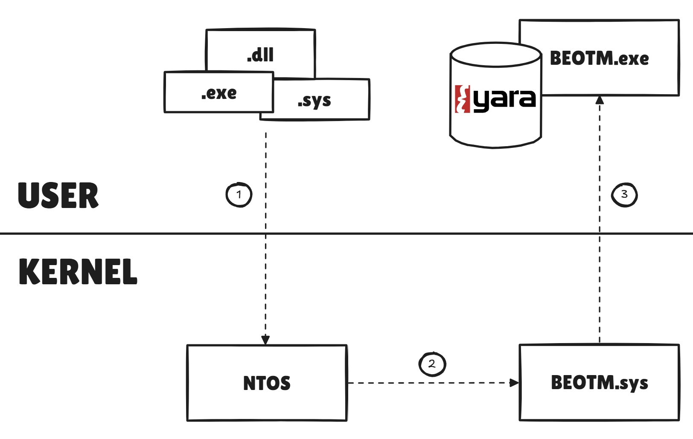
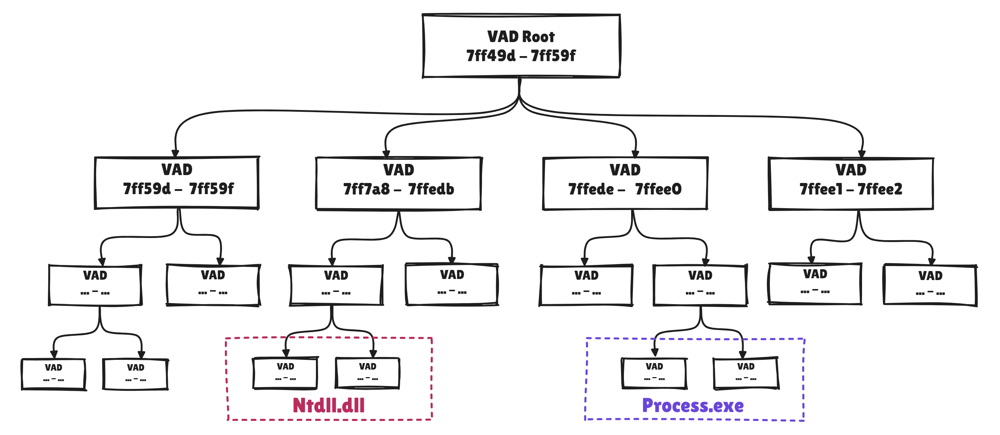
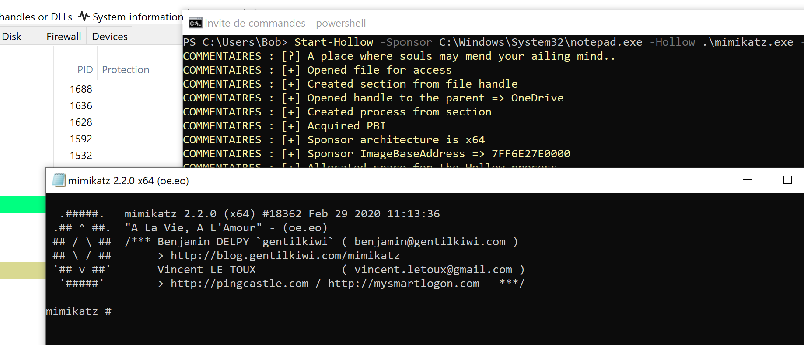
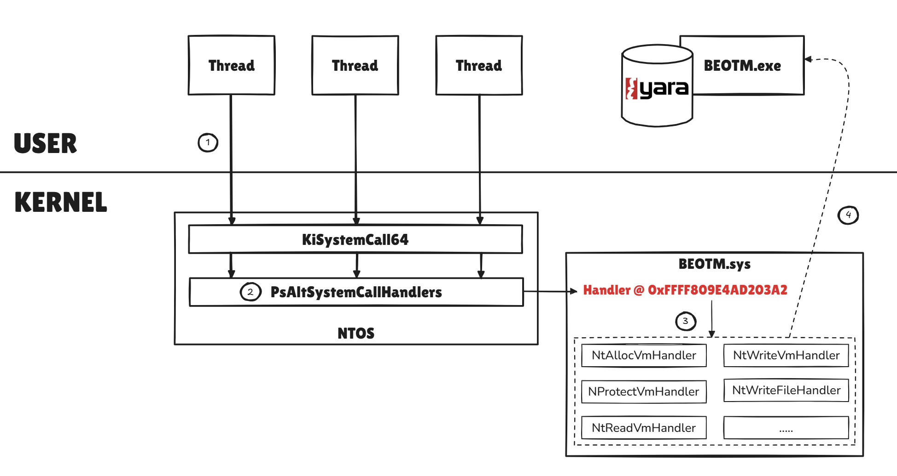
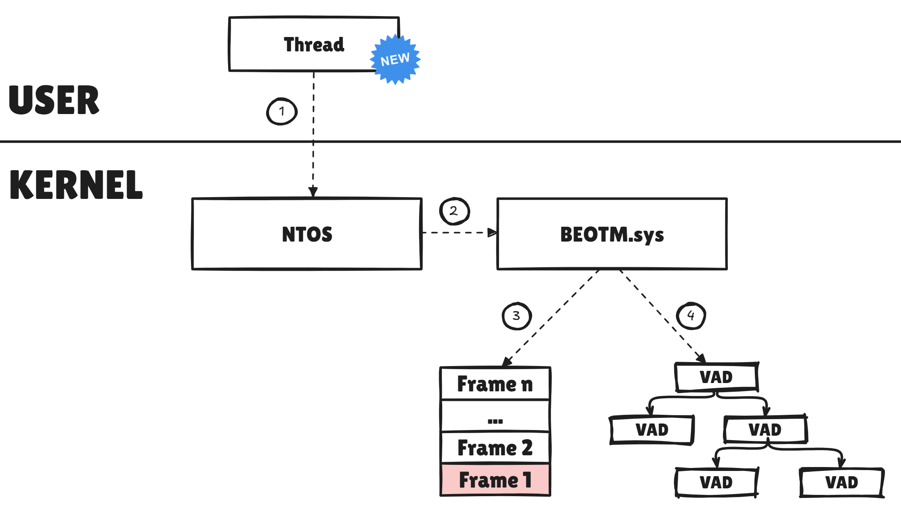
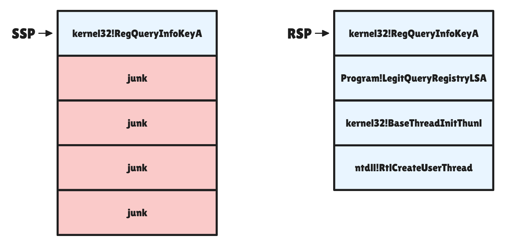

Contents
This third version marks a decisive turning point in the future of the project, which until now has been limited to launching an executable that targets a process by injecting DLLs and performing parameter analyses of system calls/functions at several levels of abstraction via YARA/Patterns rules, checking that system calls are legitimate using hardware breakpoints and instrumentation callbacks, allowing you to have fun in a variety of ways, such as bypassing hooks on DLLs, bypassing hooks on IAT, heap analysis, removing the instrumentation callback, or even trying to tamper the base address of the thread stack to avoid flagging a code injection.
Well, those days are long gone, and the project has made a major leap forward: nothing is done in user mode any more, but rather in kernel mode via a dedicated kernel driver, making it possible to exploit the Windows kernel telemetry capabilities that are far more powerful. After all, a serious EDR editor must have realized that hooking became useless in view of the telemetry capabilities offered by the kernel/ETW-TI. Wouldn't you agree?
The aim of this article is to provide a brief discussion of the detection methods implemented in this new driver and the changes that have taken place from an architectural point of view. This article will also take the time to detail some undocumented aspects and structures of the Windows kernel that have taken a bit of research to exploit properly, such as the VAD Tree and Alternative System Call Handlers.
Introducing the BEOTM Kernel Driver
As mentioned above, BEOTM's core business is moving from user mode to the Kernel. The driver relies as much on documented mechanisms such as kernel callbacks as on undocumented mechanisms like alternative system call handlers to intercept events taking place on the system and analyze them then decide whether or not a TTP it is monitoring has occurred. The aim is also to make a self-sufficient driver, so that it can gather information without having to rely on a user service to consume ETW-TI events or any other user-mode inteception method. The driver must be autonomous and versatile.The user module, for its part, has been refactored to serve only as a client for data sent by the driver, and features a minimal UI interface designed with FTXUI as a friendly basis for future evolutions.
The choice was also made to keep everything local, open-source and not to send anything to third-party CTI service providers, so the patterns used when analyzing buffers, files, and so on, come solely from the EDR's Yara database, which is supplied by the user himself. You must therefore specify to the user program the path to the folder containing your Yara rules, and the program will compile them for you. There are several very rich and diverse sources of YARA rules, my favorites being @Neo23x0's signature-base and protections-artifacts by @Elastic. You can also build your own rules for your artifacts and include them.
Events Data Format & Queues
The user and kernel modules communicate via queues and IOCTLs, with the driver producing events and data that the user program consumes. There are two types of queues, each with a capacity of 1024 events: the Bytes Queue and the Notification Queue.KERNEL_STRUCTURED_BUFFER, which in addition to the buffer to be analyzed, includes basic information such as buffer size, process PID and process name.typedef struct _KERNEL_STRUCTURED_BUFFER {
ULONG bufSize;
char procName[15];
UINT32 pid;
BYTE* buffer;
} KERNEL_STRUCTURED_BUFFER, * PKERNEL_STRUCTURED_BUFFER;KERNEL_STRUCTURED_NOTIFICATION, informing the user module of what it has detected. It thus includes post-detection event data, except when isPath is set to TRUE, which means that the driver sends the user module a path to a file to be analyzed, in which case the kernel module checks whether the file is malicious via its Yara rules. typedef struct _KERNEL_STRUCTURED_NOTIFICATION {
union {
struct {
unsigned char ProcVadCheck : 1;
unsigned char StackBaseVadCheck : 1;
unsigned char CallingProcPidCheck : 1;
unsigned char SeAuditInfoCheck : 1;
unsigned char ImageLoadPathCheck : 1;
unsigned char ObjectCheck : 1;
unsigned char RegCheck : 1;
unsigned char SyscallCheck : 1;
};
unsigned char method;
};
union {
struct {
unsigned char ShadowStackCheck : 1;
unsigned char Reserved : 7; // Align
};
unsigned char method2;
};
ULONG64 scoopedAddress;
BOOLEAN isPath;
HANDLE pid;
ULONG bufSize;
char procName[15];
char targetProcName[15];
union {
struct {
unsigned char Critical : 1;
unsigned char Warning : 1;
unsigned char Info : 1;
unsigned char Reserved : 5; // Align
};
unsigned char Level;
};
char* msg;
} KERNEL_STRUCTURED_NOTIFICATION, * PKERNEL_STRUCTURED_NOTIFICATION;
Kernel Notification Callbacks
How can you talk about telemetry without mentioning kernel callbacks? BEOTM takes advantage of the 5 main documanted notification callbacks offered by the kernel to develop simple TTP techniques:- Process Creation/Deletion via
PsSetCreateProcessNotifyRoutineEx: When a process is created, the driver checks that the process is not ghosted, and then checks for PPID spoofing. - Threads Creation/Deletion via
PsSetCreateThreadNotifyRoutine: For each newly-created thread, the driver runs a tampering index scan on the image of the process that issued the thread, and also checks that the thread is not the result of code injection. - In-Memory Image Loading via
PsSetLoadImageNotifyRoutine: Allows the driver to be notified each time an image is mapped in memory. It is this callback that BEOTM uses to capture processes launched on the system, and not the notification callback on processes. - Registry-based Operations via
CmRegisterCallbackEx: Allows to check whether a persistence operation in the registry has taken place. - Objects-related Operations via
ObRegisterCallbacks: Enables the to check whether an attempt has been made to open a handle with virtual memory read rights on LSASS.exe.
The driver also exploits a kind of callback which is not documented but which is, in my opinion, the most powerful of those mentioned above: The alternative system call mechanism. The Windows kernel allows us to register a callback and redirect thread system calls to this callback. This callback then captures the state of the thread (its context) on which we can apply analyses. This part has its own section later in this article.
In-Memory Mapped Images Monitoring
For each image mapped into memory, the driver captures the path dansPIMAGE_INFO to the file and transmits it to the user module, which checks for any signature via its Yara database. If a pattern is detected, the user module sends an IOCTL to the driver with the process pid, asking it to terminate the process in question.

As this method dispatches the path to all PE modules mapped in memory by processes, it can also be used to monitor libraries loaded by other modules, as with LoadLibraryA-like functions. As drivers are also PE modules, they are also subject to this analysis.
Path extraction and delivery via the Notifications Queue is managed by the
ImageUtils::ImageLoadNotifyRoutine function in the Images.cpp source file.
The following example shows the immediate termination of mimikatz.exe as soon as the pattern is recognized in the image:
Process Tampering/Hollowing Protection
Anyone who has ever dealt with forensic image analysis to detect hollowing with Volatility using plugins like vadinfo will know what I'm talking about here. The BEOTM driver now uses a highly relevant structure: the Virtual Address Descriptor Tree. As its name suggests, this structure takes the form of a tree, with each leaf describing a virtual memory region. Each process has its own VAD tree. In this way, the EDR uses the same structure as the kernel itself to track the evolution of regions, so it can locate the regions dedicated to images loaded into memory.
This structure is particularly useful for analyzing the integrity of process images loaded into memory. A process hollowing TTP (T1055.012) and its sub-variants such as ghosting or Herpaderping are very effective in fooling analysts and automated detection tools, but these techniques create obvious contradictions between a process's Loader Data (LDR) and its VAD tree. It is these contradictions that the driver seeks to detect in order to establish the TTP. To illustrate this, we'll analyze a hollowed process. Here I've used the Start-Hollow.ps1 script to launch an instance of Mimikatz.exe under the guise of Notepad.exe:

First, we inspect its VAD tree and locate the VAD associated with the process image in question.
3: kd> !process 0 0 notepad.exe
PROCESS ffffa701c91b0080
SessionId: 1 Cid: 0f20 Peb: fd39e9f000 ParentCid: 0548
DirBase: b2c92000 ObjectTable: ffff96802b037300 HandleCount: 184.
Image: notepad.exe
3: kd> dx ((_EPROCESS*)0xffffa701c91b0080)->VadRoot
((_EPROCESS*)0xffffa701c91b0080)->VadRoot [Type: _RTL_AVL_TREE]
[+0x000] Root : 0xffffa701ca2885e0 [Type: _RTL_BALANCED_NODE *]
3: kd> !vad 0xffffa701ca2885e0
VAD Level Start End Commit
ffffa701c9f506a0 6 40000 40132 307 Private READWRITE
ffffa701c76b74d0 5 7ffe0 7ffe0 1 Private READONLY
ffffa701c76b7a70 4 7ffe7 7ffe7 1 Private READONLY
ffffa701c7e48e40 6 fd39cb0 fd39d2f 38 Private READWRITE
(...)
ffffa701ca257440 6 7ff6e27e0 7ff6e2817 4 Mapped Exe EXECUTE_WRITECOPY \Windows\System32\notepad.exe
(...)
The VAD indicates that the notepad.exe image is contained between Virtual Page Numbers (VPNs) 7ff6e27e0 and 7ff6e2817. There is also a region starting at VPN 40000.
Secondly, we inspect the process's LDR structure to see the base addresses of the images mapped in memory for the process.
3: kd> .process 0xffffa701c91b0080
Implicit process is now ffffa701`c91b0080
WARNING: .cache forcedecodeuser is not enabled
3: kd> !peb
PEB at 000000fd39e9f000
InheritedAddressSpace: No
ReadImageFileExecOptions: No
BeingDebugged: No
ImageBaseAddress: 0000000040000000
NtGlobalFlag: 0
NtGlobalFlag2: 0
Ldr 00007ffe73d1c4c0
Ldr.Initialized: Yes
Ldr.InInitializationOrderModuleList: 0000028932991870 . 00000289329a13d0
Ldr.InLoadOrderModuleList: 00000289329919e0 . 00000289329a13b0
Ldr.InMemoryOrderModuleList: 00000289329919f0 . 00000289329a13c0
Base TimeStamp Module
40000000 5e5a3963 Feb 29 11:13:55 2020 C:\Windows\System32\notepad.exe
7ffe73bb0000 688f8c4b Aug 03 18:20:27 2025 C:\Windows\SYSTEM32\ntdll.dll
7ffe72620000 87803e41 Jan 14 17:11:45 2042 C:\Windows\System32\KERNEL32.DLL
(...)
An anomaly is quickly noticed: the LDR indicates that the notepad.exe image starts at 0000000040000000, which is actually the address of the payload containing the Mimikatz image.
The EDR follows the same logic to detect image tampering attempts: for each newly created thread, a recursive analysis of the VAD tree is performed to locate the image region of the claimed process, then compares this address with the results of the LDR as was done on WinDbg, any irregularity between the two structures suggests that the process has been tampered and an alert is issued.
Let's take a look at how the driver traverses the tree on WinDbg to retrieve some infos. In more detail, the VAD tree is a self-balancing binary search tree of type AVL. It can thus be defined as a
RTL_AVL_TREE.
2: kd> dx -r1 (_RTL_BALANCED_NODE*)((_RTL_AVL_TREE*)&((_EPROCESS*)0xffff9b050411d080)->VadRoot)
(_RTL_BALANCED_NODE*)((_RTL_AVL_TREE*)&((_EPROCESS*)0xffff9b050411d080)->VadRoot) : 0xffff9b050411d858 [Type: _RTL_BALANCED_NODE *]
[+0x000] Children [Type: _RTL_BALANCED_NODE * [2]]
[+0x000] Left : 0xffff9b05053746e0 [Type: _RTL_BALANCED_NODE *]
[+0x008] Right : 0xffff9b0505365f00 [Type: _RTL_BALANCED_NODE *]
[+0x010 ( 0: 0)] Red : 0x1 [Type: unsigned char]
[+0x010 ( 1: 0)] Balance : 0x1 [Type: unsigned char]
[+0x010] ParentValue : 0xdd [Type: unsigned __int64]MMVAD.
2: kd> dx (_MMVAD*)&(((_RTL_BALANCED_NODE*)((_RTL_AVL_TREE*)&((_EPROCESS*)0xffff9b050411d080)->VadRoot)->Root)->Left)
(_MMVAD*)&(((_RTL_BALANCED_NODE*)((_RTL_AVL_TREE*)&((_EPROCESS*)0xffff9b050411d080)->VadRoot)->Root)->Left) : 0xffff9b05053746e0 [Type: _MMVAD *]
[+0x000] Core [Type: _MMVAD_SHORT]
[+0x040] u2 [Type: ]
[+0x048] Subsection : 0x0 [Type: _SUBSECTION *]
[+0x050] FirstPrototypePte : 0xffff9b0500000001 [Type: _MMPTE *]
[+0x058] LastContiguousPte : 0x0 [Type: _MMPTE *]
[+0x060] ViewLinks [Type: _LIST_ENTRY]
[+0x070] VadsProcess : 0xffff9b0505374750 [Type: _EPROCESS *]
[+0x078] u4 [Type: ]
[+0x080] FileObject : 0xffff9b0505da4e58 : "" - {...} [Type: _FILE_OBJECT *] Core member, of type MMVAD_SHORT, contains information such as the start and end VPNs.
2: kd> dx -r1 ((_MMVAD*)&(((_RTL_BALANCED_NODE*)((_RTL_AVL_TREE*)&((_EPROCESS*)0xffff9b050411d080)->VadRoot)->Root)->Left))->Core
((_MMVAD*)&(((_RTL_BALANCED_NODE*)((_RTL_AVL_TREE*)&((_EPROCESS*)0xffff9b050411d080)->VadRoot)->Root)->Left))->Core [Type: _MMVAD_SHORT]
[+0x000] NextVad : 0xffff9b0504534260 [Type: _MMVAD_SHORT *]
[+0x008] ExtraCreateInfo : 0xffff9b0504535160 [Type: void *]
[+0x000] VadNode [Type: _RTL_BALANCED_NODE]
[+0x018] StartingVpn : 0xff56a860 [Type: unsigned long]
[+0x01c] EndingVpn : 0xff56c860 [Type: unsigned long]
[...]
Subsection member from which we can pivot to the ControlArea member and then FilePointer to obtain the name of the image associated with the VAD by nullifying the last byte of the FilePointer address. This is how the driver obtains the names of images associated with a memory range described by a VAD.
2: kd> dx ((_FILE_OBJECT*)(void*)((((_MMVAD*)0xffff9b0503f9f720)->Subsection->ControlArea->FilePointer.Object) & 0xFFFFFFFFFFFFFFF0))->FileName
((_FILE_OBJECT*)(void*)((((_MMVAD*)0xffff9b0503f9f720)->Subsection->ControlArea->FilePointer.Object) & 0xFFFFFFFFFFFFFFF0))->FileName : "\Windows\System32\ntshrui.dll" [Type: _UNICODE_STRING]
[+0x000] Length : 0x3a [Type: unsigned short]
[+0x002] MaximumLength : 0x78 [Type: unsigned short]
[+0x008] Buffer : 0xffff80074e787d40 : "\Windows\System32\ntshrui.dll" [Type: wchar_t *]ProcessUtils::isProcessImageTampered function in the Process.cpp source file and the VadUtils::exploreVadTreeAndVerifyLdrIngtegrity recursive function in Vad.cpp, which checks whether the process image is tampered or not.
The driver issues an alert as soon as TTP is detected, and the process is immediately killed:
System Calls Tracing & Monitoring via Alternative Handlers
This mechanism has been the most fun I've had implementing it, and I'm delighted with the way it works. Why is that? Well, because I don't think we talk about it enough, given its power. We're looking at a mechanism that allows us to intercept all system calls made by process threads, and which also makes our task easier by providing us with the context of the thread in user mode, enough to build a bunch of detection methodologies.The principle is that you can register a system call handler in the
PsAltSystemCallHandlers array, which contains the address of alternative handlers (e.g. the syscall handler for pico processes) and redirect threads to it by modifying certain members of their ETHREAD. A few previous works on this interception method have already been published, notably WinAltSyscallHandler by @0xcpu and CallMon by @DownWithUp. The Syscall Handler has to follow the following signature:
BOOLEAN SyscallHandler(PKTRAP_FRAME trapFrame)
TrapFrame of the calling thread, enabling it to retrieve the system call arguments via RCX, RDX, R8, R9 and then RSP+0x28 for the 6th and RSP+0x30 for the seventh etc... The system call is identified through the RAX register, which contains its ID, the famous Syscall ID.
In the BEOTM driver, the handler is defined by the
SyscallsUtils::SyscallHandler function in SyscallsTracing.cpp. As you can see, the function dispatches the handling of the system call to the right handler, depending on its ID.
BOOLEAN SyscallsUtils::SyscallHandler(PKTRAP_FRAME trapFrame) {
PULONGLONG pArg5 = (PULONGLONG)((ULONG_PTR)trapFrame->Rsp + 0x28);
PULONGLONG pArg6 = (PULONGLONG)((ULONG_PTR)trapFrame->Rsp + 0x30);
[...]
ULONG id = (ULONG)trapFrame->Rax;
[...]
if ((ULONG)id == NtAllocId) {
NtAllocVmHandler( // NtAllocateVirtualMemory | Win 10 -> Win11 24H2
(HANDLE)trapFrame->Rcx,
(PVOID*)trapFrame->Rdx,
trapFrame->R8,
(SIZE_T*)trapFrame->R9,
(ULONG)arg5,
(ULONG)arg6
);
}
else if (id == 0x003a) {
NtWriteVmHandler( // NtWriteVirtualMemory | Win 10 -> Win11 24H2
(HANDLE)trapFrame->Rcx,
(PVOID)trapFrame->Rdx,
(PVOID)trapFrame->R8,
(SIZE_T)trapFrame->R9,
(PSIZE_T)arg6
);
}
}KiSystemServiceUser, in which the PsAltSystemCallDispatch function is called: 2: kd> u nt!KiSystemServiceUser L20
nt!KiSystemServiceUser:
[...]
fffff802`716126ba fb sti
fffff802`716126bb 488bcc mov rcx,rsp
fffff802`716126be e8cd1c1700 call nt!PsAltSystemCallDispatch (fffff802`71784390)
fffff802`716126c3 3c01 cmp al,1
[...]
GS:188 segment offset, then moves the byte contained at KTHREAD+3 into DL, then checks whether the 5th byte of this byte is set by performing an AND with 0x20. If the 5th byte is enabled, we move the address of PsAltSystemCallHandlers[1], the second entry in the array, into RAX, check if the address is executable and, if so, RAX execution is managed by guard_dispatch_icall (kCFG-related function).
2: kd> u PsAltSystemCallDispatch L10
nt!PsAltSystemCallDispatch:
fffff802`71784390 4883ec38 sub rsp,38h
fffff802`71784394 65488b042588010000 mov rax,qword ptr gs:[188h] // 1
fffff802`7178439d 8a5003 mov dl,byte ptr [rax+3]
fffff802`717843a0 f6c204 test dl,4
fffff802`717843a3 7409 je nt!PsAltSystemCallDispatch+0x1e (fffff802`717843ae)
fffff802`717843a5 488b05ec837700 mov rax,qword ptr [nt!PsAltSystemCallHandlers (fffff802`71efc798)]
fffff802`717843ac eb0c jmp nt!PsAltSystemCallDispatch+0x2a (fffff802`717843ba)
fffff802`717843ae f6c220 test dl,20h // 2
fffff802`717843b1 7418 je nt!PsAltSystemCallDispatch+0x3b (fffff802`717843cb)
fffff802`717843b3 488b05e6837700 mov rax,qword ptr [nt!PsAltSystemCallHandlers+0x8 (fffff802`71efc7a0)] // 3
fffff802`717843ba 4883f802 cmp rax,2
fffff802`717843be 720b jb nt!PsAltSystemCallDispatch+0x3b (fffff802`717843cb)
fffff802`717843c0 e8eb4be8ff call nt!guard_dispatch_icall (fffff802`71608fb0) // 4
fffff802`717843c5 4883c438 add rsp,38h
fffff802`717843c9 c3 ret
fffff802`717843ca cc int 3
Header member of ETHREAD:
2: kd> dx ((_KTHREAD*)&@$curthread.KernelObject)->Header
((_KTHREAD*)&@$curthread.KernelObject)->Header [Type: _DISPATCHER_HEADER
[...]
[+0x003] DebugActive : 0x0 [Type: unsigned char]
[+0x003 ( 0: 0)] ActiveDR7 : 0x0 [Type: unsigned char]
[+0x003 ( 1: 1)] Instrumented : 0x0 [Type: unsigned char]
[+0x003 ( 2: 2)] Minimal : 0x0 [Type: unsigned char]
[+0x003 ( 4: 3)] Reserved4 : 0x0 [Type: unsigned char]
[+0x003 ( 5: 5)] AltSyscall : 0x1 [Type: unsigned char]
[+0x003 ( 6: 6)] UmsScheduled : 0x0 [Type: unsigned char]
[+0x003 ( 7: 7)] UmsPrimary : 0x0 [Type: unsigned char]
[...]
PsAltSystemCallHandlers[1] . In truth, it is not really a handler in the sense that it doesn't decide whether the system call continues or not, and doesn't handle the rest of the handling flow, but the handler function is no more than a callback that receives a copy of the TrapFrame containing the thread context before its switch to the kernel and this is really cool.
There's also an AltSyscall bit in ETHREAD which informs processes that each thread they create must have their AltSyscall bit enabled.
2: kd> dt _EPROCESS AltSyscall
nt!_EPROCESS
+0x87c AltSyscall : Pos 25, 1 Bit
PsRegisterAltSystemCallHandler function, which passes the handler address and its index in the PsAltSystemCallHandlers array. However, no more than 1 handler can be registered, and it must be registered at index 1. Otherwise, the kernel spits on us and throw a BSOD.
This is clearly seen in the decompilation of
PsRegisterAltSystemCallHandler (here for Win10 22H2) where the function checks if the index is < 2 (Otherwise BSOD) and checks if the cell is null and not filled (Otherwise BSOD again lol).
__int64 __fastcall PsRegisterAltSystemCallHandler(__int64 a1, unsigned int a2)
{
__int64 v2; // rbx
struct _KTHREAD *CurrentThread; // rax
v2 = (int)a2;
if ( !a1 || a2 >= 2 )
{
KeBugCheckEx(480LL, 2LL, 0LL);
JUMPOUT(0x14090F8F5LL);
}
if ( !a2 )
{
KeBugCheckEx(480LL, 3LL, 0LL);
__debugbreak();
}
CurrentThread = KeGetCurrentThread();
--CurrentThread->KernelApcDisable;
ExAcquirePushLockExclusiveEx(&PsAltSystemCallRegistrationLock, 0LL);
if ( PsAltSystemCallHandlers[v2] )
{
ExReleasePushLockEx(&PsAltSystemCallRegistrationLock);
KeLeaveCriticalRegion();
KeBugCheckEx(480LL, 1LL, PsAltSystemCallHandlers[v2]);
__debugbreak();
}
PsAltSystemCallHandlers[v2] = a1;
ExReleasePushLockEx(&PsAltSystemCallRegistrationLock);
KeLeaveCriticalRegionThread(KeGetCurrentThread());
return 0LL;
}
PsAltSystemCallHandlers[0] is already taken by PsPicoAltSystemCallDispatch:
3: kd> dqs nt!PsAltSystemCallHandlers L2
fffff806`79cfc798 fffff806`795843f0 nt!PsPicoAltSystemCallDispatch
fffff806`79cfc7a0 00000000`00000000char __fastcall IoInitSystemPreDrivers(__int64 a1)
{
[...]
PsAltSystemCallHandlers[0] = (__int64)PsPicoAltSystemCallDispatch;
PsRegisterAltSystemCallHandler give us the choice of the ‚Äúindex‚Äù if we have no choice? Well I don't have the answer. Perhaps Microsoft will allow multiple handlers to be registered in the future...üëÄ
In any case, here's what the table looks like once the BEOTM driver has registered its handler (when symbols are loaded):
0: kd> dqs nt!PsAltSystemCallHandlers L2
fffff806`79cfc798 fffff806`795843f0 nt!PsPicoAltSystemCallDispatch
fffff806`79cfc7a0 fffff806`795c3420 BestEdrOfTheMarketDriver!SyscallsUtils::SyscallHandler
AltSyscall flag to 0x0, as well as that of their parent process. Meaning that before unloading the driver, we need to go back over all the processes and reset the processes and threads to default, but there are a few problems: (1) There is no function to reset PsAltSystemCallHandlers[1] to 0x0. (2) The ZwSetInformationProcess function can be used to set AltSyscall to 0x1 in EPROCESS, but fails to do the reverse for a set of critical processes such as System.exe or lsass.exe, and if one of the threads goes into the alternative handler that no longer exists, we logically end up with a BSOD (INVALID_ALTERNATE_SYSTEM_CALL_HANDLER_REGISTRATION).
A radical solution that worked for me is to browse the processes from the
ActiveProcessLinks member of PsInitialSystemProcess (which is of type EPROCESS), set AltSyscall to 0x0 in the processes, then browse their threads from the ThreadListEntry member and set the AltSyscall flag to 0x0. This ensures that no threads are redirected to the alternative handler after the driver has been unloaded.
This operation is handled by
SyscallsUtils::DisableAltSyscallFromThreads3.
This alternative syscall handlers method is cool as it solves a long-standing problem: intercepting system calls from the kernel without touching the SSDT, and it contributes to the self-sufiscence of defensive (or offensive oops) drivers. However, it seems to be available only on builds from Win10 20H1 (hence the limitation imposed on driver compatibility). This method is used by the driver to intercept the parameters of certain system calls and pass them on to the user module for a search for Yara patterns.

Sensitive System Calls Parameters Monitoring
The BEOTM driver uses this mechanism to intercept sensitive system calls commonly used for code injection or file downloading, such asNtWriteVirtualMemory and NtWriteFile. The principle is simple: each time a system call is intercepted, the callback is called and if it is a syscall of interest then a buffer is created. This buffer is then sent for analysis via the Bytes Queue:
NtWriteVmHandler, which captures and sends for analysis the buffer that is attempting to be written to memory.
VOID SyscallsUtils::NtWriteVmHandler(
HANDLE ProcessHandle,
PVOID BaseAddress,
PVOID Buffer,
SIZE_T NumberOfBytesToWrite,
PSIZE_T NumberOfBytesWritten
) {
PVOID buffer = ExAllocatePool2(POOL_FLAG_NON_PAGED, NumberOfBytesToWrite, 'msg');
if (buffer) {
RtlCopyMemory(buffer, Buffer, NumberOfBytesToWrite);
RAW_BUFFER rawBuf;
rawBuf.buffer = (BYTE*)buffer;
rawBuf.size = NumberOfBytesToWrite;
rawBuf.pid = PsGetProcessId(PsGetCurrentProcess());
if (!CallbackObjects::GetBytesQueue()->Enqueue(rawBuf)) {
ExFreePool(rawBuf.buffer);
}
}
}NtWriteVirtualMemory, NtProtectVirtualMemory and NtWriteFile. Once intercepted, these 3 system calls are sufficient to detect a bunch of artifacts.
The following example shows the detection of Mimikatz.exe as it attempts to be retrieved with wget.exe from Github. This is achieved thanks to the interception of
NtWriteFile:
In the following example, we detect a thread hijacker attempting to inject shellcode generated with msfvenom into a remote process. This detection is carried out by intercepting
NtWriteVirtualMemory:
Abnormal Syscalls Monitoring
Here I've taken over a detection method I implemented on the user side in the previous version, using instrumentation callbacks to detect direct system calls. Why not do the same thing on the kernel side, using the same principle: as soon as an Nt* system call is issued, the handler checks whether RIP (user) is included in Ntdll, but this time through the VAD tree, so as to verify whether or not it's Ntdll that is issuing the system call in question. The principle is the same: we still check the address to which RIP points, but unlike instrumentation callbacks, we don't check it by capturing the return, but rather by capturing the execution flow.It's the
SyscallsUtils::isSyscallDirect function that handles this task.
Obviously, no matter how you cook up your system calls on the user side, BEOTM will catch them all and analyze the ones it wants to. This method only serves to increase doubt about a process, and to raise questions about why it would have issued a direct system call. So no, you won't be able to bypass system call interception from user-mode hehe.
The following example shows an alert activated when an artifact is launched, relying on direct syscalls:
In-Memory Code Injection Prevention
Relying on the callback mechanism when a thread is created, once the EDR driver is notified it retrieves the thread stack at the time of its creation withRtlCaptureStackBackTrace and looks to see if its first address is included within the Ntdll-dedicated virtual memory region.
To do that, it recursively scans the VAD tree of the thread's parent process and locates the Ntdll-specific entry. If the thread's stack base address is Ntdll-integrated, then all's well, otherwise the thread is killed on the spot.
This logic is managed by the ThreadUtils::isThreadInjected function in the Threads.cpp source file.

Note that I've also handled the case of a WoW64 process: the check is performed on both 32-bit and 64-bit addressing modes and on both
C:\Windows\System32\ntdll.dll and C:\Windows\SysWOW64\ntdll.dll images.
ℹ️​ I know that this method can also raise the red flag for JIT-based artifacts. However, I'm not going to build a detection logic for JIT, or at least not for the time being. Here, I'm more interested in code injections that would be successful without triggering the alert.
Detection of common C2 artifacts: Sliver & Metasploit
Here we show how BEOTM detects the activity of an implant generated by Sliver, a notable C2 whose implants work on the principle of injecting code into memory.The same applies to Metasploit artifacts, which are also based on code injection, but don't last long:
Shadow Stacks Against Threads Stack Spoofing (Experimental)
The detection method presented here relies on the shadow stack check on which Control-Flow Enforcement Technology (CET) is based, to verify the integrity of the call stack against tampering. When a sensitive system call is detected, such as manipulations in executable or executable-enabled memory regions, or sensitive registry key requests, the driver unrolls the regular call stack to which RSP points at the top, and unrolls the shadow stack from the Shadow Stack Pointer (SSP) provided by the Model-Specific RegisterIA32_PL3_SSP.
Once the two stacks have been retrieved, the driver first checks whether they are the same size, and if so, whether they are identical. If this is not the case, it is assumed that the stack has been corrupted by the program, and an alert is issued.

As CET is not yet generalized to all binaries, I call it an "Experimental" method because it requires two things from you: The first one is to have a VM or test lab compatible with Intel VT-x/EPT for machines with Intel CPUs, or AMD-R/RVI for AMD CPUs. This will require an 11th generation Intel processor or higher, or an AMD Zen3 CPU or higher. Why is this? Well, because the shadow stack resides in secure, non-alterable memory regions. Intel VT-x/EPT and AMD-R/RVI, provide hardware support for isolating certain memory regions. The shadow stack is stored in these protected memory areas to ensure that it cannot be modified by regular application code.
The second point is that you'll need to compile your artifacts with the
/CETCOMPAT option, to enable the user to make your program CET-compatible and benefit from the shadow stack.
This logic behind the shadow stack checking is managed by the
StackUtils::isStackCorruptedRtlCET function within Stack.cpp.
Microsoft is gradually introducing CET in Windows new versions, so let's be ahead of the game! ;)
Preventing Credentials Dump
The driver also prevents handle opening attempts with an access mask containingPROCESS_VM_READ on the Lsass.exe process, to block any process dump attempts. And directly terminates the processuss that initiated the handle opening request. This operation is handled by the ObjectUtils::isCredentialDumpAttempt function, which is called by the ObjectUtils::PreOperationCallback function within the Objects.cpp source file. in addition to checking whether the Handle's access mask contains PROCESS_VM_READ, the driver also checks whether the calling process is signed as in other detection methods. If it isn't, it's dead.
BOOLEAN ObjectUtils::isCredentialDumpAttempt(
POB_PRE_OPERATION_INFORMATION OpInfo
) {
PEPROCESS targetProc = (PEPROCESS)OpInfo->Object;
PUNICODE_STRING targetImageFileName;
SeLocateProcessImageName(targetProc, &targetImageFileName);
if ( PsGetProcessId(targetProc) != PsGetProcessId(IoGetCurrentProcess()) ) {
if (UnicodeStringContains(targetImageFileName, L"lsass.exe") || UnicodeStringContains(targetImageFileName, L"LSASS.exe")) {
if (OpInfo->Operation == OB_OPERATION_HANDLE_CREATE) {
PEPROCESS callingProc = PsGetCurrentProcess();
PPS_PROTECTION callingProcProtection = PsGetProcessProtection(callingProc);
int accessMask = OpInfo->Parameters->CreateHandleInformation.DesiredAccess;
if (callingProcProtection->Level == 0x0) {
if (accessMask & PROCESS_VM_READ) {
OpInfo->Parameters->CreateHandleInformation.DesiredAccess = PROCESS_TERMINATE;
return TRUE;
}
}
}
}
}
return FALSE;
}
```Modulating BEOTM & Issue Reporting
As you'll see if you browse through the source code, BEOTM's structure is designed to separate the concerns of each detection scope. Not only to make things clearer, but also to enable you to build your own detection methodologies for specific TTPs, and even contribute to the project if you like. As an example, you can try to intercept other interesting system calls for analysis purposes. I've already got a few placeholders for functions that interest me personally:VOID SyscallsUtils::NtReadVmHandler(
HANDLE ProcessHandle,
PVOID BaseAddress,
PVOID Buffer,
SIZE_T NumberOfBytesToRead,
PSIZE_T NumberOfBytesRead
) {
// For future use
}
VOID SyscallsUtils::NtQueueApcThreadHandler(
HANDLE ThreadHandle,
PPS_APC_ROUTINE ApcRoutine,
PVOID ApcArgument1,
PVOID ApcArgument2,
PVOID ApcArgument3
) {
// For future use
}The README of the repository details how to build the project from source and which dependencies are required.
I'm aware that this first might not be perfect, and there may be be things I haven't seen that will jump out at others, such as crashes or unexpected bugs. This is a rather delicate passage in the kernel, and I'll be more than happy to correct any problems reported to me via an Issue. I'm just asking for as much information as possible to help me pinpoint the cause of the error. To do this, nothing better than to provide me with the conditions under which the bug was reproduced and, incidentally, the artifact that caused it + the output of “
analyze -v” on WinDbg in kernel debugging mode, if possible. I've also tried to manage compatibility between Windows versions as best I could, but as I don't have all the kernel builds in my hands, especially for structure offsets, I've had to get rid of some of the things I'd set up, such as SSDT parsing, for fear of blowing things up. So if anything has changed in the range covered by the driver (Win10 20H1 -> Win11 23H2), let me know :).
Also if you want to access the old user-mode mono-process version, you can find it on this branch.
Wrapping Up
Behind the fun aspect of this project, I'd also like to contribute, in my modest way, to open-sourcing methods for exploiting the telemetric capabilities of operating systems for detectability purposes. I dare to hope that one day, advanced analysis methods will not only be available to organizations, but also to the general public (and that they won't cost a fortune).This was my first real experience of designing a kernel driver from A to Z, with its constraints and its satisfactions. Of course, I also did it in C++ which is the world's greatest programming language. Btw i tried to do some POCs in Rust but the syntax made me puke so not for now.
I'd also like to take advantage of this skidding moment to answer a question I'm often asked: “Why did you call it Best Edr Of The Market?” Well, it's simple: all EDR publishers claim that their product is the best, especially at the end of the year with the MITRE results. So why shouldn't I too lol.
In any case, I hope you enjoy this 3rd version and that anyone interested in it has as much fun as I had while making it. And I obviously remain open to discussion and suggestions (Discord: yazidou). Feel free to contact me if you'd also like to contribute to the project and need help at some point!
Yazid